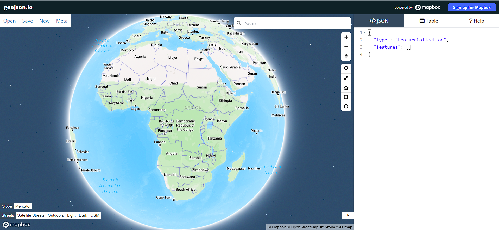
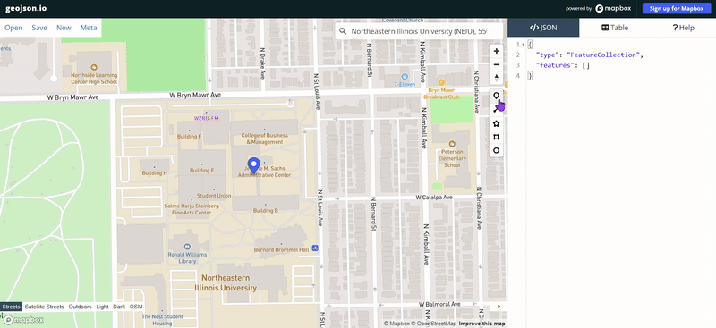
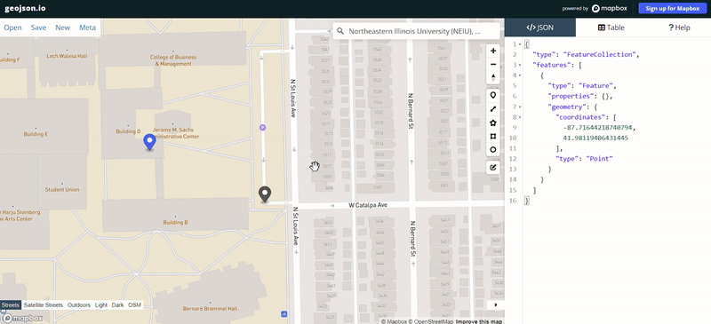
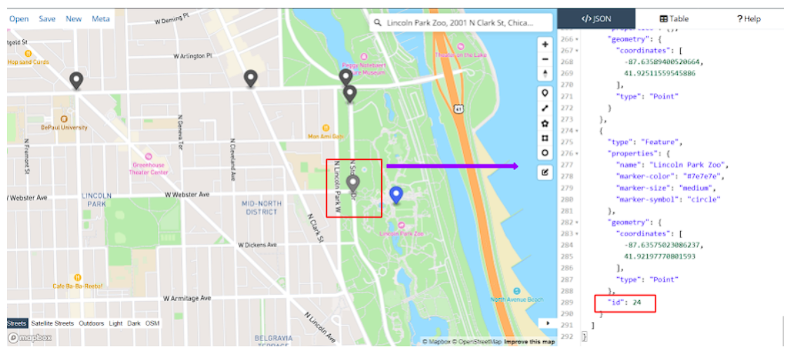

Lab 8: Animating a Path on a Map using D3 and Leaflet
Overview
In this lab, you will learn how to animate a path in your map from Point A to Point B. Although you could use simple shapes as your "moving" symbol, we will be taking advantage of adding a .png icon as the "moving" symbol.
I will be going over instructions on how I did my map which you can use for your own map. You will see the instructions in the Your Turn section at the bottom. This lab is very similar to our Lab 2 however it does involve making your own markers and points on an application called GeoJSON.io.
Unfortunately, you can not test the animation locally. You will need to upload everything to GitHub to view the animation. You should still be able to view the base map locally!
Part 1: Setting up the <head> of our HTML
First, we are going to want to set up the DocType, HTML language, and the head portion of our code. Feel free to make a new folder for your project on your computer.
<!DOCTYPE html>
<html>
<head>
<meta charset="utf-8" />
<title>Animated Path</title>
<link rel="stylesheet" href="https://cdnjs.cloudflare.com/ajax/libs/leaflet/0.7.7/leaflet.css"/>
<script src="https://cdnjs.cloudflare.com/ajax/libs/leaflet/0.7.7/leaflet.js"></script>
<script src="https://d3js.org/d3.v3.min.js" type="text/javascript"></script>
<style>
html, body { margin: 0; padding: 0; height: 100%; }
#map {
min-height: 100%;
}
svg {
position: relative;
}
</style>
</head>
I also included the code #map {min-height: 100%;} to make the map full-screen to the code above.
Organization will be crucial in getting this map to work with the animation.
Part 2: Points and Markers
As you can see from the code above, we are using D3 to pull in the needed functions to create the process of animating the path we will eventually use on our maps. D3 is a JavaScript library used to aid in data visualization.
You can visit the D3 gallery library here if you want to look for more examples of how D3 is applied to other projects.
Before we start constructing the rest of the code, we will need to create our markers and points for our GeoJSON file. We will be using GeoJson.io to create what we need!
Navigate to the link above and the webpage should start with this view:
You should be able to zoom in and out of the map or use the search bar to find the location you’re looking for.

For my map, I will be generating a lot of points for those who want to eventually make the animation a bit more of a “journey” but please remember that as long as you have a start and end marker on your map the animation will work.
Each point in between will create a linear path.
GeoJSON.io Instructions:
- Navigate to your starting marker by either zooming in and out of the world map or typing in your ideal location. My animation will show me driving from NEIU to Lincoln Park Zoo. 
- Once you reach your starting point, you will create a marker by dropping a pin to the starting location (the closer to the road the better but this is up to you).
- Then you will open the settings of the pin that you just dropped to add “feature information”. You can do this by simply clicking on the pin you just dropped.
- First, you’ll add “name” and the “actual name of the starting location (i.e NEIU was my starting location name)” to the feature in the appropriate field boxes within the pop-up.
- Next, you should click “add simple style properties” to officially turn this point into a marker.
- On the right-hand side of the screen, you should see GeoJSON.io creating the marker as GeoJSON script. It will continue to populate information as you add more points and markers to the map. 
- This is where the fun/tedious part starts! Next, you’ll drop pins (do NOT make them into markers) on the animation path you’d like to take to your endpoint marker. You can take any path you’d like for your own points! No need to copy my path exactly.
- Next, once you reach Lincoln Park Zoo, you will create an end marker in the same way that you created the starting marker.
- Congrats! If you were following along you should have a list of points and markers you can use now! You can now click the Save button and download your points and markers as a GeoJSON file. It should download automatically as a map.geojson.
- Put this file in your folder with the map we just started creating.
- Before exiting GeoJSON.io I would keep tabs on how many points you made because it will come in handy later! You can do this by looking at the “ID” number of your very last marker. 
Note: You will see other feature information show up automatically including “marker-color”, “marker-size”, and “marker-symbol”. You do not have to adjust any of this information since the code we will be using later will create the style for the markers and points.
Note: If you decide to make a map with a ton of points, like me, I would suggest searching for your end destination but don’t add any markers or pins just yet! Use the blue pin (which is temporary and not added to your code) to guide your path.

Part 3: Setting up the <body> of our HTML
Next, let’s focus on our code again and work on the <body>.
Let's start the foundation for the base map. As always you can pick your own base map if you’d like.
<body>
<div id="map"></div>
<script type="text/javascript">
var map = L.map('map').setView([41.9726405,-87.6907021], 14);
L.tileLayer('https://tile.openstreetmap.org/{z}/{x}/{y}.png', {
attribution: 'Animated path made with <a href="https://d3js.org/">D3</a>, Map data © <a href="http://openstreetmap.org">OpenStreetMap</a> contributors, <a href="http://creativecommons.org/licenses/by-sa/2.0/">CC-BY-SA</a>, Imagery © <a href="http://mapbox.com">Mapbox</a>',
maxZoom: 18,
minZoom: 6,
}).addTo(map);
We’ll add the container for the animated path.
var svg = d3.select(map.getPanes().overlayPane).append("svg");
var g = svg.append("g").attr("class", "leaflet-zoom-hide");
Then we’ll use D3 to pull in the geojson that you just saved.
d3.json("map.geojson", function(collection)
The next set of code pulls in some associated elements we will not need to adjust. Feel free to look over the code. Many parts of this section create the (x,y) layer to push the line animation through. There is also an element that dictates that the animation has to be “linear”. No need to adjust this but keep in mind that the path you create is linear because of this code.
var featuresdata = collection.features;
var transform = d3.geo.transform({
point: projectPoint
});
var d3path = d3.geo.path().projection(transform);
function projectPoint(x, y) {
var point = map.latLngToLayerPoint(new L.LatLng(y, x));
this.stream.point(point.x, point.y);
}
We’ll add code that will draw the points in the GeoJSON file to the map. However, the opacity will be pre-set to 0. This is the secret to creating the line animation without showing the other points you made.
var ptFeatures = g.selectAll("circle")
.data(featuresdata)
.enter()
.append("circle")
.attr("r", 3)
.style("opacity","0");
We will include an element that you’re more than welcome to adjust: The animation line/path. You can adjust the color, width of the line, and so on and so forth until you’re happy with your line animation. As mentioned before, you have to commit your work to GitHub before you can view the animation. I would wait to adjust this until the very end (if you want to).
var linePath = g.selectAll(".lineConnect")
.data([featuresdata])
.enter()
.append("path")
.style("fill","none")
.style("stroke","#e892a2") // line color
.style("stroke-width","4px") // line width
.style("opacity","1"); // line opacity
Next, we’ll add code that actually adds the markers to the map. This is where saving the ID number I mentioned before will come in handy. You will want to make sure that the feature data starts at 0 (ID number for starting point) and ends at whatever your ID number for your endpoint is. Mine was 24!
var originANDdestination = [featuresdata[0], featuresdata[24]];
The next set of codes allows you to adjust the origin, destination radius, color, and opacity. Feel free to adjust this as you’d like.
var begend = g.selectAll(".loc")
.data(originANDdestination)
.enter()
.append("circle", ".loc")
.attr("r", 5) // origin/destination circle radius
.style("fill", "#e892a2") // origin/destination color
.style("opacity", "1"); // origin/destination opacity
After this, we will add in code that will return the name field you made in your GeoJSON. You can also adjust these labels just like the previous code to make your map more aesthetically pleasing. If for some reason, you want to change your label name you don’t have to go through the trouble of redoing your points– just adjust the name fields within the GeoJSON file (carefully).
var text = g.selectAll("text")
.data(originANDdestination)
.enter()
.append("text")
.text(function(d){
return d.properties.name //"name" is the attribute we added when creating the geojson file; if you are using something different please change.
})
.attr("y", - 22) // relative y position of the label to the circle
.attr("x", 0) // relative x position of the label to the circle
.style("fill","black") // label font color
.style("font-weight","bold") // label font weight
.style("font-size","13px") // label font size
.style("text-shadow","2px 2px 3px #FFF, 4px 4px 6px #000"); // add shadow
Close to the end!
Next, we’ll add the code below to add in the PNG which will travel along with the animated line. Make sure to change the name of “car.png” to whatever you name your icon.
var marker=g.append("image")
.attr("x", -33)
.attr("y", -32)
.attr("width", 40) //change size of PNG (width)
.attr("height", 40) //change size of PNG (height)
.attr("xlink:href", "car.png") // Draw the traveling marker; make sure to change the name to whatever you changed your PNG file as.
.attr("preserveAspectRatio", true)
.attr("id","marker")
I suggest visiting Flaticon for an icon you can use. Any icon works, it doesn’t have to be a car or plane– it can be something fun too. Feel free to adjust the size of the PNG if needed by adjusting the “width” and “height”.
Finally, we will add code that will give the animation functions to reset the view when you zoom in and out of the map. No need to touch this code.
map.on("viewreset", reset);
reset();
transition();
function reset() {
var bounds = d3path.bounds(collection),
topLeft = bounds[0],
bottomRight = bounds[1];
text.attr("transform",
function(d) {
return "translate(" +
applyLatLngToLayer(d).x + "," +
applyLatLngToLayer(d).y + ")";
});
begend.attr("transform",
function(d) {
return "translate(" +
applyLatLngToLayer(d).x + "," +
applyLatLngToLayer(d).y + ")";
});
ptFeatures.attr("transform",
function(d) {
return "translate(" +
applyLatLngToLayer(d).x + "," +
applyLatLngToLayer(d).y + ")";
});
marker.attr("transform",
function() {
var y = featuresdata[0].geometry.coordinates[1];
var x = featuresdata[0].geometry.coordinates[0];
return "translate(" +
map.latLngToLayerPoint(new L.LatLng(y, x)).x + "," +
map.latLngToLayerPoint(new L.LatLng(y, x)).y + ")";
});
svg.attr("width", bottomRight[0] - topLeft[0] + 1500)
.attr("height", bottomRight[1] - topLeft[1] + 250)
.style("left", topLeft[0] - 50 + "px")
.style("top", topLeft[1] - 60 + "px");
linePath.attr("d", toLine);
g.attr("transform", "translate(" + (-topLeft[0] + 50) + "," + (-topLeft[1] + 50) + ")");
}
function transition() {
linePath.transition()
.duration(17500)
.attrTween("stroke-dasharray", tweenDash)
.each("end", function() {
d3.select(this).call(transition);
});
}
function tweenDash() {
return function(t) {
var l = linePath.node().getTotalLength();
interpolate = d3.interpolateString("0," + l, l + "," + l);
var marker = d3.select("#marker");
var p = linePath.node().getPointAtLength(t * l);
marker.attr("transform", "translate(" + p.x + "," + p.y + ")"); //move marker
console.log(interpolate(t));
return interpolate(t);
}
}
});
function applyLatLngToLayer(d) {
var y = d.geometry.coordinates[1];
var x = d.geometry.coordinates[0];
return map.latLngToLayerPoint(new L.LatLng(y, x));
}
</script>
</body>
</html>
And we’re done. Feel free to look the full code here. Your map should look something like this:
Your Turn
Feel free to create your own map line animation with your own points and icons with the instructions above!
You can do something local like mine or make an animated path on a bigger scale (i.e. a plane flying from Chicago to Seattle).
Make sure to upload all of your files (HTML, GeoJSON, and PNG) in the same repository on Github.
As mentioned above, the animation will not work until you upload all of your files on Github.
Additionally, don't forget to rename your HTML "Index.html".
Resources
- D3. D3 - A Beginner’s Guide to Using D3. (n.d.). https://website.education.wisc.edu/~swu28/d3t/
- Dougherty, J., & Ilyankou, I. (2023, November 2). Hands-on Data Visualization. Draw and Edit with GeoJson.io. https://handsondataviz.org/geojsonio.html
- Taxi techblog 1: Data Prep and Backend. Chris Whong. https://chriswhong.com/data-visualization/taxitechblog1/
- Use the amazing D3 library to animate a path on a leaflet map. Technical Tidbits From Spatial Analysis & Data Science. http://zevross.com/blog/2014/09/30/use-the-amazing-d3-library-to-animate-a-path-on-a-leaflet-map/
- Liu, T. (n.d.). N/A. Animated path. https://neiugis.github.io/animatedpath/